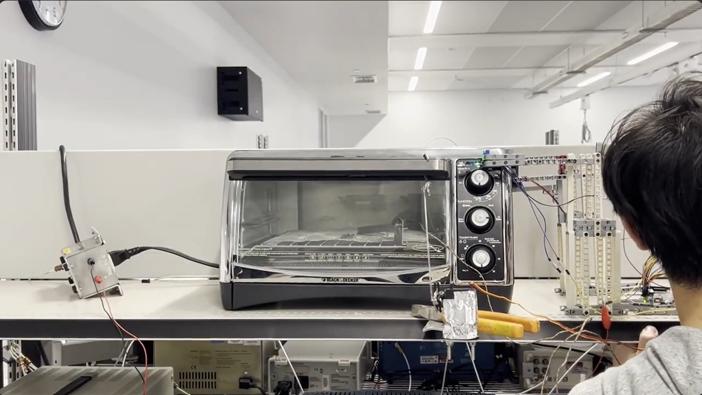
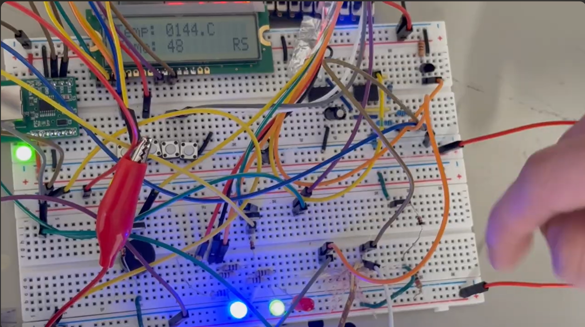
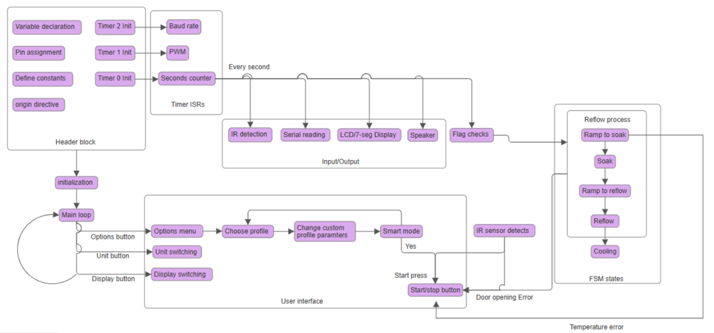
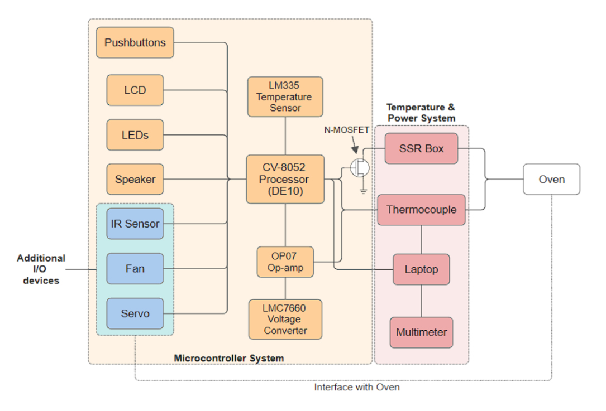

01
THERMAL CONTROL / FSM
Embedded firmware2025
Programmable Reflow Oven
Converted a toaster oven into a programmable solder-reflow system with temperature acquisition, profile control, and user feedback.
GitHub
More details
Goal
Build a controllable reflow process with customizable temperature stages and clear system feedback.
Implementation
- Implemented a finite-state machine for configurable reflow profiles using 8051 assembly.
- Read a thermocouple through cold-junction compensation and ADC-based temperature acquisition.
- Controlled heater power through PWM and a solid-state relay.
- Integrated LCD and speaker feedback, fault handling, an IR sensor, and motor-based automation.
Engineering focus
Embedded state management, sensor acquisition, temperature control, peripheral integration, and fault-aware behavior.
Images



